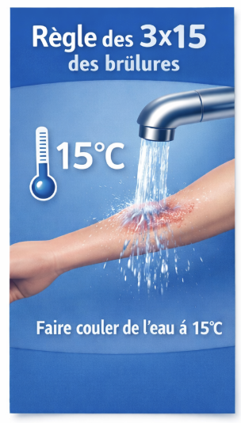
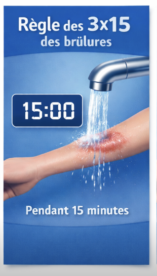
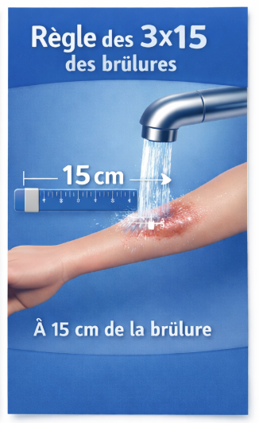

Les brûlures
Face à une brûlure, la rapidité d'action est déterminante.
Règle des 3 × 15
15 degrés
15 minutes
15 centimètres
N’appliquez pas de crème, d’huile, de glace ou d’eau glacée sur la brûlure : cela pourrait abîmer davantage la peau.
Et les secours ?
Quand appeler immédiatement les secours ?
Dès que la brûlure est grave, et en particulier si la personne est un nourrisson, une personne âgée ou immunodéprimée, même pour des brûlures apparemment modérées.
Un avis médical est également nécessaire si des signes d'infection apparaissent dans les jours qui suivent (fièvre, rougeur qui s'étend, écoulement de pus, douleur persistante).
Comment soulager ce type de brûlure à la maison ?
Règle des 3 × 15
Faites couler de l’eau à 15°C pendant 15 minutes à 15 cm de distance de la zone brûlée. Arrêtez si vous sentez du froid ou si vous vous sentez mal.
Retirez les vêtements
… et les bijoux s’ils ne sont pas collés à la peau.
Protégez
La brûlure avec un pansement ou un tissu propre.
Ampoules
Ne les percez pas !
Brûlure grave / étendue
Alertez immédiatement les secours.
Se laver les mains
Lavez-vous les mains après avoir effectué ces premiers secours.